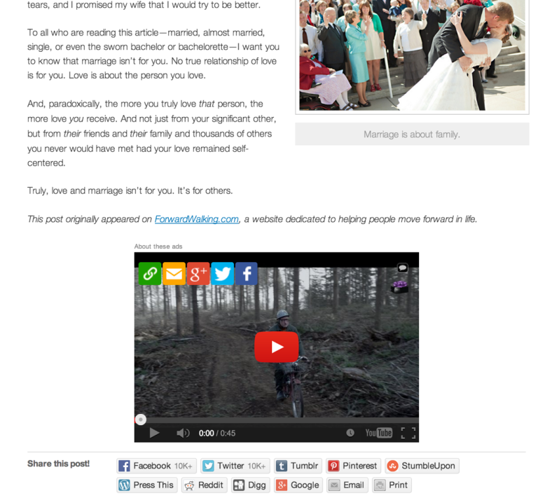
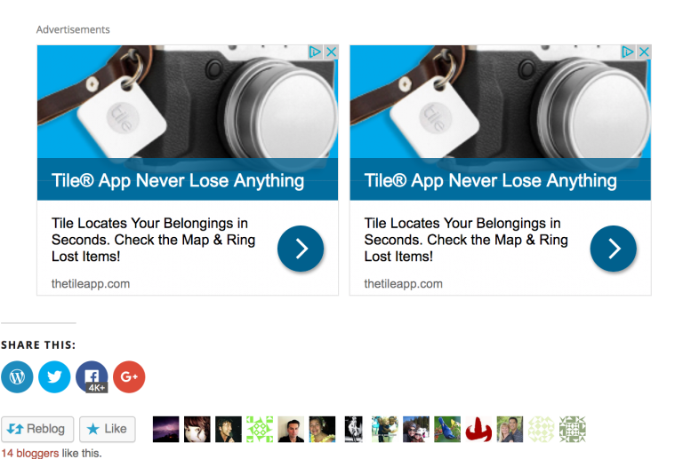
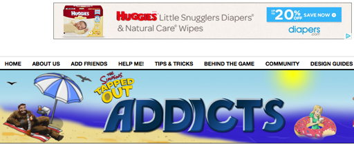

Q: I am an advertiser interested in purchasing ad space, what are my options? A: We appreciate the interest, but currently do not allow people to purchase ad space.
Ad creative and placement
Q: What do the ads look like? A: WordAds currently has two placement options.
Themes that run only one placement per page run them both below the first post
listing on your homepage and at the bottom of each individual post. The ad size
here is called a medium rectangle. An example of a site with this ad unit appears below.

In some themes two medium rectangles will run there.

In addition to the medium rectangle unit, WordAds themes run 4-5 ad placements:
a leaderboard horizontal unit in the header and a skyscraper vertical unit in one of the sidebars. An example of a site that is running WordAds themes is The Simpsons Tapped Out Addicts.

We occasionally test other types of ads for brief periods and will update this list if new ones become part of our regular roster.
Q: Can the ads contextually match the content on my site? A: The ads tend to be broad national campaigns, rather than targeted local or topical campaigns.
We have found that the broad campaigns pay better. That said, visitors from countries outside the US
and Europe will often see targeted local ads.
Q: Can I choose which ads will run? A: While you have some control over the display of your ads via
My Sites > Earn > Settings, picking certain advertisers is not currently an option.
We do our best to maintain the highest standards for ads we display through WordAds.
We have the ability to block specific ads network-wide, so if you see an ad featuring
inappropriate content (like sex, drugs, or violence), please make a screenshot and right-click
the ad to copy the URL it’s linked to. Don’t click the ad directly,
as it will probably redirect to a different URL.
Once you have this information, please feel free
to contact us and we’ll investigate the issue.
Q: What do the ads look like in other countries? A: While the ad placements are the same globally, some countries have their own advertisers.
This means that only the ads themselves differ.
Earnings & payment
Q: When are earnings posted? A: We post earnings daily. Earnings are finalized after the close of the month.
Q: Where can I see my earnings? A: Once your earnings have been posted, you’ll be able to see them via the Earnings tab at My Sites > Earn.
Q: Can I have more information about my earnings? A: Generally, you’re paid per impression (when the ad is seen by a visitor),
not by click. That means the more visits you get, and the more each visitor
uses your site, the more you’ll earn.
Advertising rates fluctuate constantly. The online ads system is similar to
the stock market where advertisers bid in real time. Unless you have the
same exact number of visitors from the same countries every single month and
advertisers are valuing those visitors equally every month, you’ll never be
able to calculate a consistent rate just by earnings vs. impression totals.
What you earn can vary greatly per site, depending on the following factors:
The amount of traffic.
Where the majority of the traffic is coming from.
(North American ad placements currently pay out at a
much greater level than ads from other regions.)
How much advertisers value your users based on their cookies.
How many visitors are using ad blockers.
The actual ads that are displayed.
Q: Do you have guidance for how I can earn more? A: As you might follow there’s not much you can do about most of that.
Our team focuses on viewability, ad blockers, ad placements, relationships with buyers,
improving the real time bidding dynamics, etc. The primary levers you have to earn more are:
Focus on building more organic traffic.
There are many levers to help you earn more,
though the main revenue lever publishers can focus on is traffic.
The ideal is traffic from North America where the highest Internet advertising rates can be found.
Genre doesn’t have a major impact on earnings so focus on whatever topic you think will drive more visits.
Advertisers are primarily focused in who is your audience, not what the are reading.
So a knitting site can earn as much as a site about software.
Do not post content that is not “Family Safe”
Buying visits to your site is a bad idea
Q: Do ads run in emails or mobile phones? A: We recently introduced a partner to provide email ads for our users.
We also display ads on smartphones, which is a fast-growing traffic segment.
Q: Why do you need my Social Security number? A: The IRS requires that we collect it if you are a US citizen.
Q: How and when do I get paid? A: WordAds pays monthly via PayPal. The outstanding amount will be paid approximately
45 days following the end of the month in which it was earned. If you earned less than
$100 in a given month, your earnings will carry over to the next month instead.
Eligibility
Q: I applied to WordAds. When will it be available to me?
A: Our advertisers have a minimum traffic requirement.
Once you reach the level they’re looking for, your application will
be automatically sent to them for evaluation.
Q: I applied to WordAds. When will it be available to me? A: A site generally needs thousands of pageviews each month to earn meaningful revenue.
Q: Why do I need a custom domain name? A: We are unable to provide WordAds for sites with the default free
[example].wordpress.com URL, so you’ll need to either register a new domain name
or map an existing domain name to your WordPress.com blog of choice.
Launching and pausing
Q: What do I need to do to launch WordAds?
A: After you have filled out our application and met the minimum traffic requirement,
your site will be reviewed to make sure it complies with the publisher standards.
We will then launch WordAds and notify you via your account email address.
Q: Can I stop WordAds? A: You can pause or stop WordAds any time at My Sites > Tools > Earn > View Ad Dashboard > Settings.
Be aware that if you pause WordAds you may still see ads on your site,
unless you have a Personal, Premium, or Business plan.
New features
Q: What are your plans for the future of WordAds? A: Much of the work we do remains behind the scenes,
like negotiating deals with ad partners around the world.
Our primary goal today is to increase the payments per page
for all our sites. We’re also investing energy in customizing
new themes for WordAds.
We think of WordAds as a trusted advertising advisor, not an open marketplace
for advertising products. We’ve tested and continue to test dozens of ad partners
and products so that our users don’t have to spend their time on that. Some sites
have asked if they can add a specific ad network or sell ads themselves. WordAds is
not a good fit for sites that look for total freedom to run whatever ads program they choose.